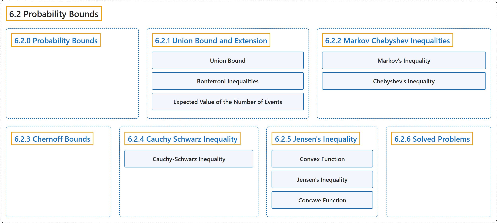

6.2 Probability Bounds
Classification

Glossary
| Term | Definition | 中文翻译 | Source |
|---|---|---|---|
| 6.2 Probability Bounds 概率界 |
(No definition) | （无定义） | Pishro-Nik, 2014, section 6.2 |
| 6.2.0 Probability Bounds 概率界 |
(No definition) | （无定义） | Pishro-Nik, 2014, section 6.2.0 |
| 6.2.1 Union Bound and Extension 并集界及其推广 |
(No definition) | （无定义） | Pishro-Nik, 2014, section 6.2.1 |
| Union Bound 联合界（布尔不等式） |
"The union bound or Boole's inequality [ 13 ] is applicable when you need to show that the probability of union of some events is less than some value." | 当需要证明若干事件并集的概率小于某个值时，可以使用联合界或布尔不等式 [ 13 ]。 | Pishro-Nik, 2014, section 6.2.1 |
| Bonferroni Inequalities 邦费罗尼不等式 |
"We can in fact extend the union bound to obtain lower and upper bounds on the probability of union of events. These bounds are known as Bonferroni inequalities [ 13 ]." | 事实上，我们可以推广联合界，得到事件并集概率的下界和上界。这些界称为邦费罗尼不等式 [ 13 ]。 | Pishro-Nik, 2014, section 6.2.1 |
| Expected Value of the Number of Events 事件发生个数的期望 |
"It is interesting to note that the union bound formula is also equal to the expected value of the number of occurred events." | 值得注意的是，联合界公式也等于发生事件个数的期望。 | Pishro-Nik, 2014, section 6.2.1 |
| 6.2.2 Markov Chebyshev Inequalities 马尔可夫不等式与切比雪夫不等式 |
(No definition) | （无定义） | Pishro-Nik, 2014, section 6.2.2 |
| Markov's Inequality 马尔可夫不等式 |
"We can prove the above inequality for discrete or mixed random variables similarly (using the generalized PDF), so we have the following result, called Markov's inequality." | 对于离散或混合型随机变量，我们可以类似地（利用广义概率密度函数）证明上述不等式，于是得到如下结果，称为马尔可夫不等式。 | Pishro-Nik, 2014, section 6.2.2 |
| Chebyshev's Inequality 切比雪夫不等式 |
"Chebyshev's inequality states that the difference between \(X\) and \(EX\) is somehow limited by \(Var(X)\)." | 切比雪夫不等式表明 \(X\) 与 \(EX\) 之差在某种程度上受 \(Var(X)\) 限制。 | Pishro-Nik, 2014, section 6.2.2 |
| 6.2.3 Chernoff Bounds 切尔诺夫界 |
(No definition) | （无定义） | Pishro-Nik, 2014, section 6.2.3 |
| 6.2.4 Cauchy Schwarz Inequality 柯西-施瓦茨不等式 |
(No definition) | （无定义） | Pishro-Nik, 2014, section 6.2.4 |
| Cauchy-Schwarz Inequality 柯西-施瓦茨不等式 |
"You might have seen the Cauchy-Schwarz inequality in your linear algebra course. The same inequality is valid for random variables." | 你可能在线性代数课程中见过柯西-施瓦茨不等式。同样的不等式对随机变量也成立。 | Pishro-Nik, 2014, section 6.2.4 |
| 6.2.5 Jensen's Inequality 詹森不等式 |
(No definition) | （无定义） | Pishro-Nik, 2014, section 6.2.5 |
| Convex Function 凸函数 |
"We say that \(g\) is a convex function if, for any two points \(x\) and \(y\) in \(I\) and any \(\alpha \in [0,1]\), we have" | 如果对 \(I\) 中任意两点 \(x\) 和 \(y\) 以及任意 \(\alpha \in [0,1]\)，都有下式成立，我们就说 \(g\) 是凸函数 | Pishro-Nik, 2014, section 6.2.5 |
| Jensen's Inequality 詹森不等式 |
"Jensen's inequality states that, for any convex function \(g\), we have \(E[g(X)] \geq g(E[X])\)." | 詹森不等式指出，对任意凸函数 \(g\)，有 \(E[g(X)] \geq g(E[X])\)。 | Pishro-Nik, 2014, section 6.2.5 |
| Concave Function 凹函数 |
"On the other hand, if the line segment always lies below the graph, the function is said to be concave." | 反之，如果线段始终位于图像下方，则称该函数是凹函数。 | Pishro-Nik, 2014, section 6.2.5 |
| 6.2.6 Solved Problems 例题详解 |
(No definition) | （无定义） | Pishro-Nik, 2014, section 6.2.6 |
References
Pishro-Nik, H. (2014). Introduction to probability, statistics, and random processes. Kappa Research. Retrieved October 28, 2026, from https://www.probabilitycourse.com/